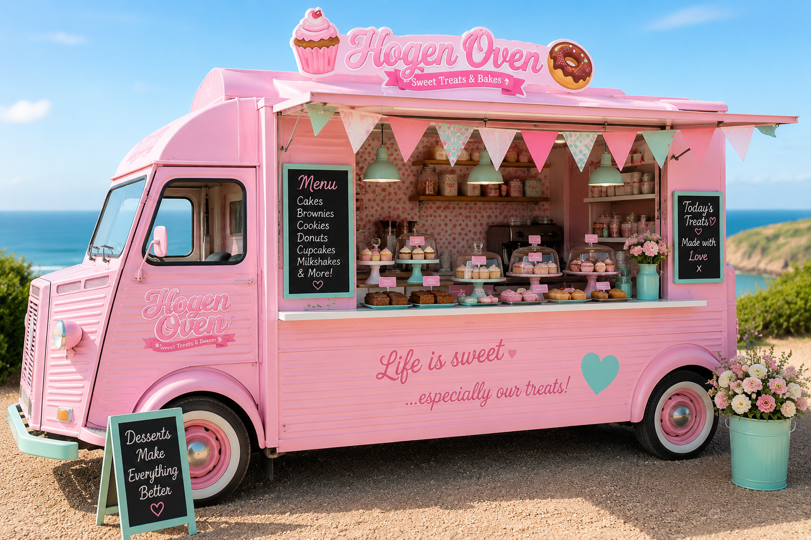

Handmade Cornish bakes, sweet treats and local events served with a pastel twist across Cornwall.
Hogen Oven started as a small family baking idea in Truro, focused on combining traditional Cornish baking with a fun, colourful dessert style.
From fresh pasties and brownies to weddings and dessert vans, everything is baked with local ingredients and handmade care.
We provide catering for weddings, birthday parties, local markets and Cornwall events throughout the year.
Our pastel pink dessert van has become a local favourite at beaches, festivals and summer celebrations.

Have a question, event enquiry or custom order request? Send us a message below.